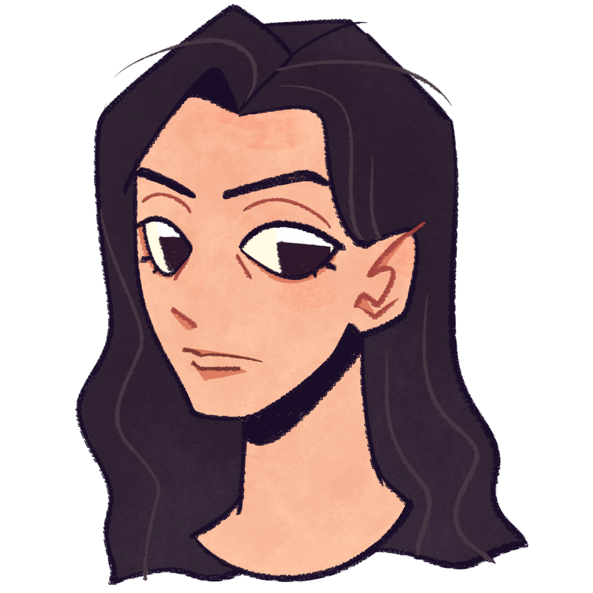
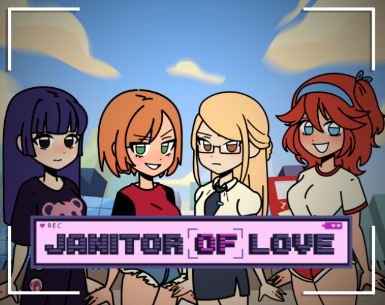
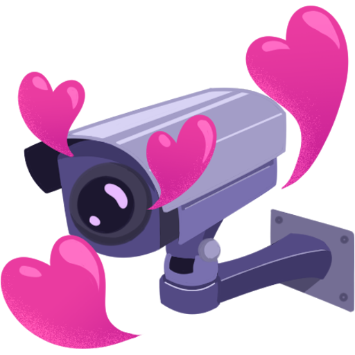
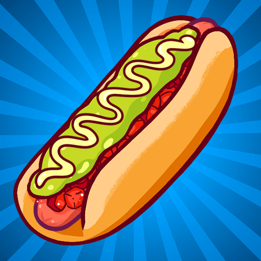

❤
Bienvenidos a mi página
 |
Soy YerkoAndrei, desarrollador de videojuegos, programador backend, administrador de bases de datos y un montón de otras cosas. Entusiasta y colaborador de código abierto. .NET C# SQL Unity Stride Avalonia WPF VSCode DBeaver Blender Krita Miembro de Umbra Studio |
Visita mi GitHub
|
Visita mi Itch.io
|
Mis Videojuegos:
 |
||
 |
Terracota es un juego 1v1 de físicas en base a turnos, donde creas tus propias fortalezas y las pruebas en combate con tus habilidades con el cañón. | |
| Terracota | Código y descarga (Stride) | |
 |
||
 |
Señal local es un juego narrativo con múltiples opciones y muchos finales. Ayuda al Usuario de la línea de emergencia a escapar del peligro en el que despertó. O guíale a descubrir la verdad del porqué perdió la memoria. | |
| Señal local | Código y descarga (Unity) | |
Mis proyectos con Umbra:
|  | ||
|  | Janitor of Love es un videojuego erótico de voyerismo. Un simulador de conserje donde puedes espiar a residentes universitarias y establecer relaciones con ellas. | |
| Janitor of Love | Descarga y Patreon (Unity) | |
 |
||
|  | Doctor Completo es un videojuego de gestión y habilidad que te sumerge en el apasionante mundo de la preparación de completos para satisfacer a tus exigentes clientes. | |
| Doctor completo | Descarga y Web (Unity) | |
Mis utilidades:
| Ñuku es un diario de notas simple y oscuro para android. | |
| Ñuku | Código y descarga (Avalonia) |
 |
Choike es un reproductor de MP3 basado en carpetas, simple, rápido, de fondo oscuro, offline, y con algunas teclas personalizadas. |
| Choike | Código y descarga (WPF) |
Mi creativo:
| Desde los sueños | |
| Videojuegos | Itch.io/YerkoAndrei |
| Código | Github/YerkoAndrei |
| Cuentos de terror | Wattpad/YerkoAndrei |
| Ilustraciones | Artstation/YerkoAndrei |
Contacto:
| Yerko Andrei Orellana Abello | |
| Correo | yerkoandrei@gmail.com |
❤